Firefly: Plots
Plots (sometimes called charts) can be made from Firefly Tables. Plotting is covered in this
section. The Tables section discusses tables
more generally, but also the specific case of loading catalogs. If you
also have Visualization capability
installed, and your table has RA and Dec in it, you can overlay it on
images.
Contents of page/chapter:
+Default Plot
+Plot Format: A First Look
+Plot Navigation
+Plot Linking
+Changing What is Plotted
+Plotting Manipulated Columns
+Restricting What is Plotted
+Overplotting
+Adding Plots
+Pinning Plots
+Combining Plots
+Example Plots
By default, after a catalog has loaded, a plot appears in the browser
window.
To obtain a full-screen view of your plot, click on the expand icon in
the upper right of the window pane when your mouse is in the window:
 . To return to the prior view, click
the "Close" arrow in the upper left.
. To return to the prior view, click
the "Close" arrow in the upper left. 
The plotting tool, by default, starts with RA and Dec plotted if it
can find RA and Dec in the corresponding table. Note that it does so
following astronomical convention -- RA increases to the left. If the
catalog does not have RA and Dec, it plots the first two numerical
columns it finds.
If you have loaded a catalog with many (> 5,000) points, you may
have an RA/Dec plot that looks something like the one on the left
here. If you have loaded a catalog with few (< 5,000) points, you
will have an RA/Dec plot that looks more like the one on the right
here.
The difference between them is that, for larger catalogs (left), the
plot is binned -- more points are encompassed in a black tile and
fewer points are encompassed in a white tile. In the context of this
tool, this is called a heatmap. For smaller catalogs
(right), each individual point is shown as a blue dot. In the context
of this tool, this is called a scatter plot.
The difference between them is that, for larger catalogs (left), the
plot is binned, or 'decimated' -- the shades of grey correspond to how
many points are encompassed in each 'cell', with the density scale
given on the right hand side of the plot. In the context of this tool,
this is called a heatmap. For smaller catalogs
(right), each individual point is shown as a blue dot. In the context
of this tool, this is called a scatter plot. Note
that even when individual points are shown, where the points overlap,
the color is darker.
In either case, letting your mouse hover over a point tells you the
values of the point under your cursor, and (if binned) how many points
are represented:
for binned
plots, and
for just one point.
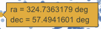 Clicking (in an unbinned
plot) highlights that point, and it stays highlighted, though you
must keep your mouse on the point in order to see the information
about it.
The reason the tool makes a heatmap for large catalogs is to more
fairly represent the point density -- and to make the plotting faster.
In these cases, though, it will not give you the option to overplot
errors (see below). If you have a heatmap and want a scatter plot, you
need to filter or otherwise restrict the catalog to have fewer points
(see below). You can change the bin size and shading via the plot
options pop-up (more on this below).
The top right of the plot window has a row of icons:
 which we now describe.
which we now describe.
- 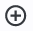Add new plot
- You may or may not have this icon. Clicking on this icon adds a
new plot. This has a separate section below.
- Pin plot
- This icon may not always appear. Clicking on this icon pins the
plot. This has a separate section below.
- 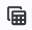 Show table
- This icon does not always appear. Clicking on this icon pulls to
the foreground the table that generated the plot that is currently in
the foreground. This is related to pinning, which has a separate section below.
 Combine chart
Combine chart
- This icon does not always appear. Clicking on this icon attempts
to combine plots; it has a separate section
below.
- 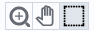 Plot mode
- This trio of icons controls the plot interaction 'mode'. By
default, you are in 'selection' mode, as seen here -- the last icon is
darker, like a pushed-in button. To activate the other modes, click on
the other icons, and they become darker or "pushed in."
- Zoom mode
- When this mode is active, when you click and drag in the plot, the
plot is zoomed to the region you have selected. Even when this mode
isn't active, you can also zoom using your scroll feature on your
mouse. To return to the original view, click on .
 Pan mode
Pan mode
- When this mode is active, when you click and drag in the plot, it
moves around in response to where you drag. To return to the original
view, click on .
- Select mode
- When this mode is active, when you click and drag in the plot, you
are given additional options at the top of the plot : The checkmark means
"select" and the funnel means "filter." The difference is that
filtering (temporarily) limits what is shown in the plot, catalog, and
image (see general information on
filters), and selecting just highlights the points enclosed within
your selection. To cancel either one, click on cancel filters
 or cancel selection
or cancel selection  .
.
- Re-scale plot
-
Return to the view that optimizes the range of x and y to show the
currently displayed points.
⚠ Tips and
Troubleshooting: Did you accidently zoom in the plot with
your magic mouse or touchpad? Click on this icon to reset the plot.
 Save
plot
Save
plot
- Save the plot. It will save as a png file, wherever your browser
is configured to save files. The saved png is the same size as it is on
your screen. If you want a big version, make the desired plot big on
your screen (expand the view to take up as much space as possible)
before saving the png.
- 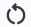 Undo
- Restore everything to the defaults. If you've played a lot with
the plot, you may want to undo everything you've done. Click this icon
to restore everything back to the defaults.
 Filter from plot
Filter from plot
- Pull up interactive filters. This button brings up filters for
the displayed catalog in an interface like all
the other tables here, except you don't see the values in the
catalog themselves; you can enter filters here in the same way you can
everywhere else in this tool (see general information on filters).
 Configure plot
Configure plot
- Click on this icon to change what is
plotted (much more on this below).
- Expand plot
- Click on this icon to make the
plot take up the whole browser window. To return to the prior view,
click the "Close" arrow in the upper left.
 Help
Help
- This icon may not appear, but if it does, it is a
context-sensitive help marker, which should bring you to this online
help.
Plot Linking: Plots are linked to catalog and image(s)
If you move your mouse over any of the points in the plot, you will
get a pop-up telling you the values corresponding to the point under
your cursor. For scatter plots, if you click on any of the points, the
object(s) corresponding to that point will be highlighted in the
overlays in the images shown, and highlighted in the catalog table.
This works the other way too - click on a row in the catalog, or an
object in the images, and the object will be highlighted in the plot
or the catalog or the image.
To change what is plotted, click on the gear icon in the upper right
of the plot window pane: .
Configuration options then appear; the options are a little different
depending on whether the points are binned or not. This section
describes how to change what is plotted, i.e., the "Modify Trace"
option at the top of both of these pop-ups. The overplotting option (and, for that matter, adding plots) are covered in more detail below.
| | This is the configuration
window for a binned (a.k.a. decimated, heatmap, and/or greyscale) plot. By
default, the "chart options" may be hidden; to reveal them, click on
the name "Chart Options" or the disclosure arrow on the right. To hide
them again, click on the disclosure arrow on the right.
|
| 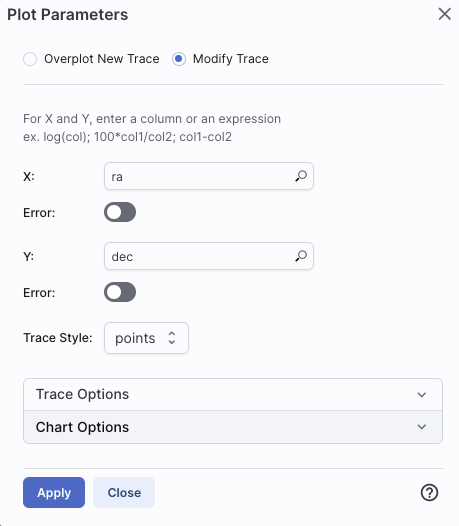 | 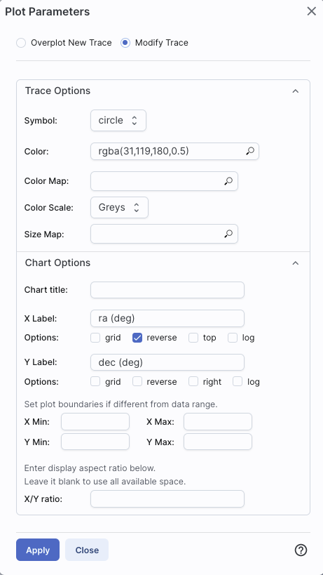 | The configuration window for a
plot that shows individual points, once fully extended, is much longer
(and scrollable), and so is shown here in two parts. Both the "Trace
Options" and "Chart Options" may be hidden by default; to reveal them,
click on the name or the disclosure arrow on the right. To hide
them again, click on the disclosure arrow on the right.
|
- Options found in both kinds of plots
- In either case, you can specify what should be plotted on
each axis. The magnifying glass is a link that brings up a
table that lists all of the available columns in the catalog.
Alternatively, you can just start typing, and viable options appear
below the box. Whatever you put in the box must match the column name
as shown in the catalog exactly.
Click on the black triangle to reveal additional options.
In both of the examples above, RA is plotted on the x-axis. It has
pulled the column name for the label; in this table, the column is
"ra" rather than "RA", and it is case-sensitive. It has copied over
the units ("deg") from the catalog, and plotted the x-axis increasing
to the left as per astronomical convention. You can change what column
is plotted, and whether or not errors are shown.
Under "Chart Options", you can specify:
- title of the plot;
- labels on the x and y-axis;
- whether or not there is a grid shown;
- whether or not the axis is reversed (as for ra in the examples
above);
- whether the x-axis is on the top or bottom and the y-axis is on
the left or right;
- whether or not the axis is logarithmic;
- the maximum and minimum values of the plot range;
- the aspect ratio of the plot (e.g., square or rectangular).
By default, the boundaries of the plot are set to encompass the full
data range. Here you can change the boundaries to specific numbers.
(This can also be set via filtering from the plot; see below.)
You can enter simple mathematical relations in these
boxes too, such as (for a WISE catalog) "w1mpro-w4mpro" to put
[W1]-[W4] on one axis.
Supported operators:
- +,-,*,/
- abs(x), acos(x), asin(x), atan(x), atan2(x), ceil(x), cos(x),
exp(x), floor(x), lg(x), ln(x), log10(x), log(x), power(x,y),
round(x), sin(x), sqrt(x), tan(x)
- degree(x) and radians(x) are also supported -- these are the same
functions as in ADQL and convert radians to degrees or degrees to
radians. For small astrometric offsets, you could make a scatterplot
of dec2-dec1 vs. (ra2-ra1)*cos(radians(dec1)) instead of typing
cos(dec1*pi()/180). (NB: pi() is also a supported function you can
use, instead of typing 3.14159.)
- Non-alphanumeric column names (e.g., those with - or + or similar
characters) should be quoted in expressions.
Click "Apply" to apply, and "Close" to return to the plot without
making changes. (For the latter, you can also click the 'x' in the
upper right.)
- Options found only in binned plots
- (Plots are binned if there are > 5,000 points in the catalog.)
From the pop-up, you can control the color table that is used
(greyscale is the default; there are many other choices in the
drop-down menu), as well as the number of bins in the x and y
directions. The default value for the number of bins is 100 in both
directions.
- Options found only in plots showing individual points
- You can add errors. Toggle the error switch, and then additional
choices appear. From there, you can select symmetric or asymmetric
errors, and then you can specify an error as either an existing column
in the catalog, or calculated from a column in the catalog.
Under "Trace Style," you can control whether the
points are shown as individual points, connected points, or just lines
connecting the points.
Under Trace Options, you have many choices.
- Choose the symbol type: circle (default), open
circle, square, open square, diamond, open diamond, cross, x,
upward-pointing triangle, hexagon, or star.
- Choose the color. By
default, the point color is a mid-range blue that is darker where more
points. This is specified by the rgba vector shown in the example
here (31, 119, 180, 50) where the last number is in units of fraction
of 1, so 0.5=50% in this example. Click on the magnifying glass to bring
up a color picker window:
From here, you can click on your desired color in the top colorful
box. Immediately below that box, you can change the color and
saturation of the top box so that you can select from a different
range of colors. Below that, you can enter numerical hex codes or RGBA
values (where the value for RGB is between 0 and 255, and A is in
units of percent, e.g., 50 = 50%). Finally, you can also select from
a pre-defined set of 15 colors by clicking on any of the small boxes.
Note that the numerical codes update as you select different colors.
Click "OK" to implement your color choice, or click 'x' in the upper
right to close the window without changing the color.
⚠ Tips and Troubleshooting:
Don't like the transparency feature of the
points that makes them darker when there are more points? Set the last
value of the vector (A) to 1. Don't like the blue? Pick a diferent
color entirely. Want the faintest point to be brighter than it is by
default? Set the last element of the color vector ("A") to be 0.7 or
0.8.
- Choose the color map. By default, all of the
points are the same color, but darker where there are more points. You
can change this such that the color scale of the points is tied to a
column value, such as w1snr (WISE-1 signal-to-noise ratio) in a WISE
catalog. If you select this option, you can also change the color
scale to any of many different options (see the drop-down). Simple
mathematical relations (as above) are also permitted in this box.
- Choose the size map. By default, all of the
points are the same size. You can change this such that the color
scale of the points is tied to a column value, such as w1snr (WISE-1
signal-to-noise ratio) in a WISE catalog. Simple mathematical
relations (as above) are also permitted in this box.
Example: Load a large WISE catalog. Plot w1snr (WISE-1 signal-to-noise
ratio) vs. w1mpro (WISE-1 profile fitted magnitude). It defaults to a
heatmap. Change the labels, making the y-axis label "WISE-1 SNR"
rather than the more cryptic column header "w1snr". Change the x-axis
label to "[W1]." Change the greyscale to yellow-green-blue ("YlGnBu")
to make it easier to see the lowest-populated bins. Depending on your
catalog, you may need to adjust the ranges. Obtain this plot:
Example: Load either a smaller WISE catalog, or the same large WISE
catalog, but filter it down such
that w1snr, w2snr, and w3snr are all greater than 10, which limits the
number of points to be <5,000. Plot w1snr vs. w1mpro. It shows the
points individually. Change the labels. Change the point color map to
scale with w2mpro (WISE-2 profile fitted magnitude). Change the point
size map to scale with w4snr (WISE-4 signal-to-noise). Obtain this
plot:
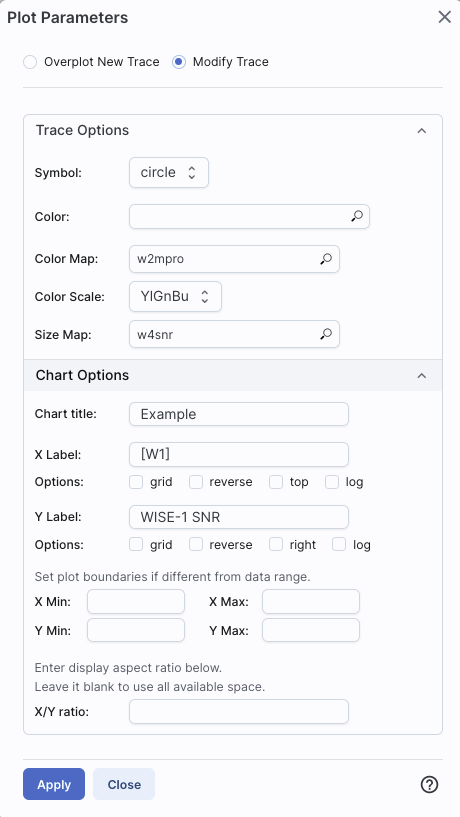
You can choose a single column to plot against another column, as
above. However, you can also do simple mathematical manipulations.
For example, if you have loaded a WISE catalog, you can plot [W1]-[W2]
vs. [W3]-[W4]. In terms of the names of the columns in the database,
this is w1mpro-w2mpro vs. w3mpro-w4mpro.
|
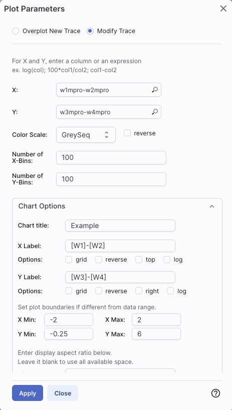
|
If you have few enough points that the plot is not binned, you can add
errors that you calculate. Here, the expression for the
x-axis errors is sqrt(power(w1sigmpro,2)+power(w2sigmpro,2)) and for
the y-axis errors, it is sqrt(power(w3sigmpro,2)+power(w4sigmpro,2))
-- that is, the errors for the individual photometric points added in
quadrature.
|
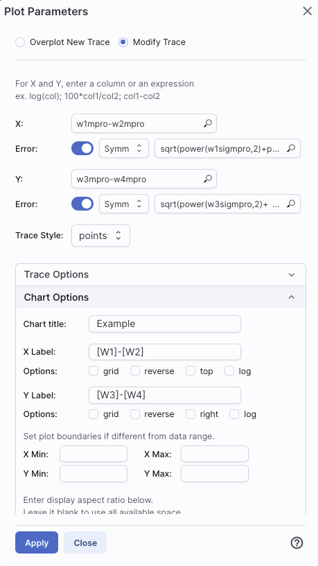
|
You can also restrict what data are plotted in any of several
different ways.
You can filter the catalog from the
table itself (discussed in another section).
You can set axis limits on the plot itself from the plot options
pop-up (discussed above).
However, and perhaps more powerfully, you can set limits from the plot
itself using a rubber band zoom. Click on the select icon in the plot
Then, click and drag
in a sub-region of the plot. New icons appear: If you click on the
funnel icon, only those data points that pass the filter are shown in
the plot, in the table, and/or overlaid on the image(s). (This is the
behavior of 'filter', as opposed to 'select'; the former restricts
what is shown, the latter just highlights the points.) For more on
filters, see the filtering discussion in
the tables section.
Example: Obtain a WISE catalog of a star-forming
region, say IC1396. Filter down the catalog to only have detections at
all four WISE bands. (Limits have undefined errors, so ask the catalog
to filter down such that w1sigmpro>0, w2sigmpro>0,
w3sigmpro>0, and w4sigmpro>0). Plot w1mpro-w4mpro on the x-axis,
and w1mpro on the y-axis. Reverse the y-axis to put bright objects at
the top. Click and drag in the plot to select the bright and red
objects, and filter them down to get a subset of bright and red
sources. For clarity, the screenshot here has the sources selected,
not filtered.
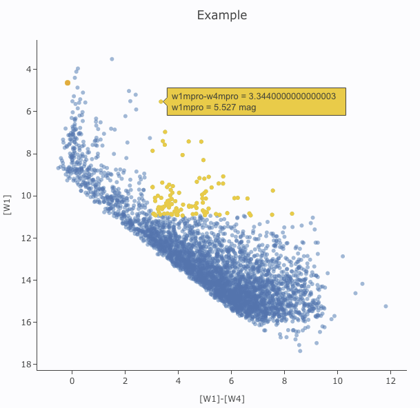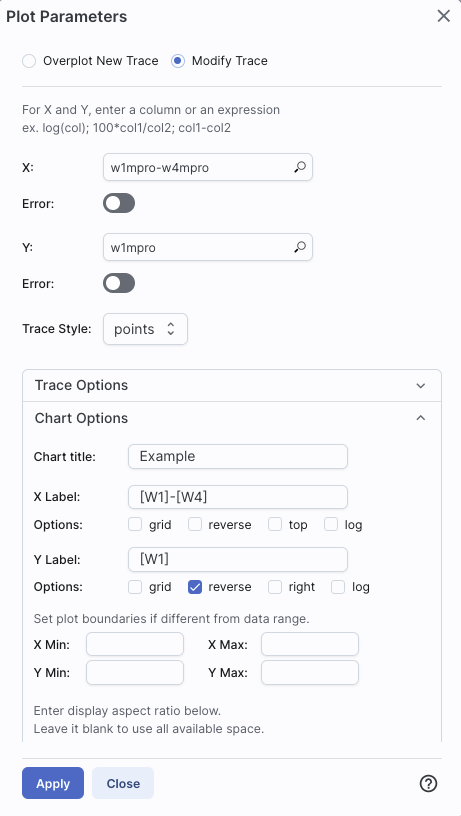
At the top of the pop-up that you get when you click on the gears, you
have two radio buttons:  They are "Overplot New Trace" and "Modify Trace." Modifying traces
(plots) has been covered above; in this section, we will cover
overplotting. This is sometimes called "multi-trace," meaning that
more than one thing is plotted.
They are "Overplot New Trace" and "Modify Trace." Modifying traces
(plots) has been covered above; in this section, we will cover
overplotting. This is sometimes called "multi-trace," meaning that
more than one thing is plotted.
When you select "Overplot New Trace," you get a new interface that is
very similar to the original interface where you selected what to
plot:
As before, you need to :
- select a plot type (scatter, heatmap, histogram);
- tell it what column(s) (and and manipulations thereof) you want for x, y, and associated errors;
- select the trace style (points, connected points, lines);
- set any additional trace options;
- set any additional chart options.
| 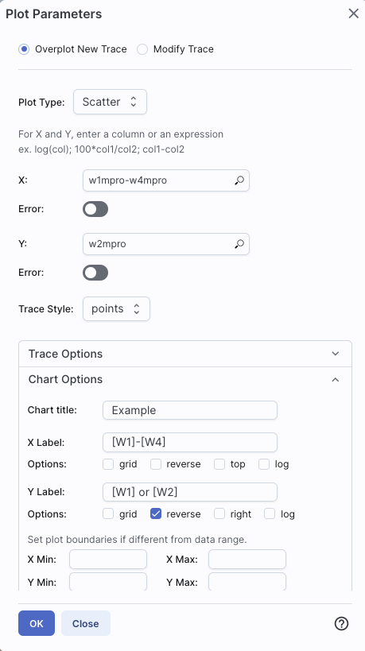
|
The best way to explain how to use this feature is probably via an
example. We have a plot of [W1] vs. [W1-W4] from above. Now add on
top of it a plot of [W2] vs. [W1-W4]. Click on the gears to bring up
the pop-up. Select "Overplot New Trace." Enter "w1mpro-w4mpro" for x
and "w2mpro" for y. Expand "Chart Options." Note that it has preserved
the overall chart title from before, but has erased the X and Y labels
(and lost the reversal of the y axis) because the overplot could
literally be anything, and need not be the same columns or even the
same units as what is already plotted. Type them in again. Here is the
configuration window right before clicking "ok", and the resultant
plot.
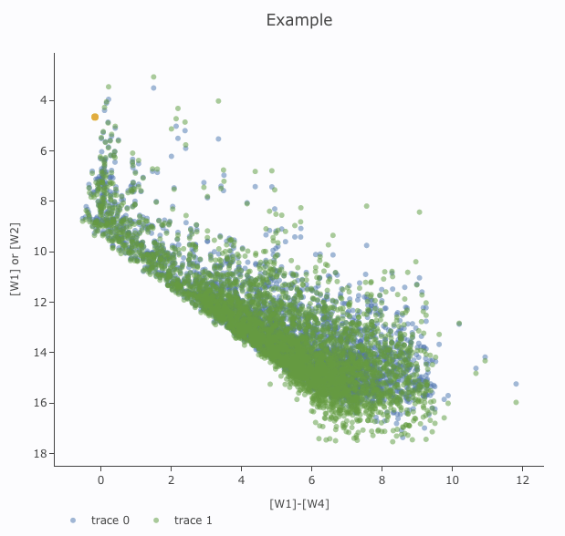
|
|
|
After you add the overplot, if you click on the gears again, note that
the choices at the top of the window have changed. You can add another
overplotted trace, modify a trace, or remove the active trace. Each
trace that you add is a new 'layer' on the plot. The drop-down menu
near the top of the window controls which trace is 'active' for
setting the x, y, errors, trace style, name, symbol, color, etc.
there is now a drop-down menu at the top of the plot: There is a
legend on the plot specifying which color corresponds to which trace.
In this example, the plot above has appeared using a blue and green
color scheme, which may be too hard to differentiate. To change the
new points' color, click on the gears, ensure "Modify Trace" is
selected, select "trace 1" (as opposed to "trace 0", the first one you
loaded), go down and expand the "Trace Options" and pick a different
color. You can also change the legend name from "Trace 1" to, in this
case, "[W2]". Click "apply" to apply the changes to the plot. Note
that once you change the trace name, the relevant drop-down menus in
the pop-up window and the legends on the plot update accordingly.
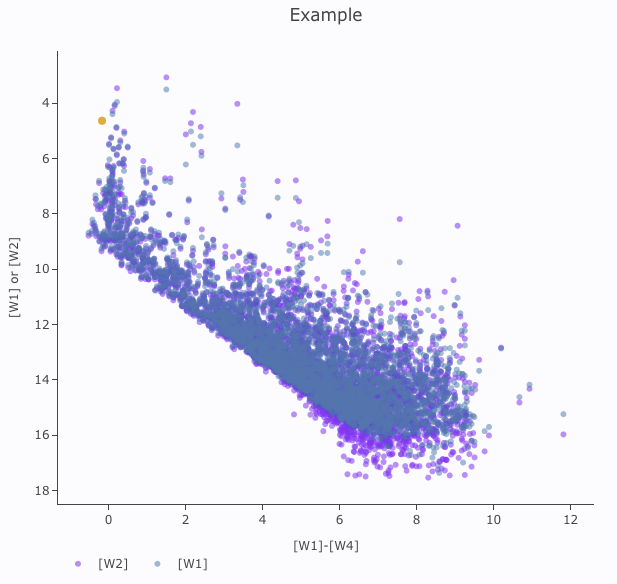
|
Note that the pop-up spawned by clicking the gears now has an additional
option at the top: "Add New Chart", "Overplot New Trace", "Modify
Trace", and "Remove Active Trace." From here, you can modify a trace
you have already plotted (as described above), overplot another trace
(also as described above), or remove the selected trace:
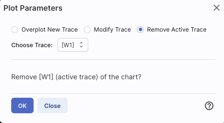
⚠ Tips and Troubleshooting
- Right now, the overplotting only works from the same catalog -- that
is, you cannot plot [W1] vs. [W1]-[W4] from one catalog and overplot
[W1] vs. [W1]-[W4] from another catalog. (We enthusiastically await
this capability too.)
- You can easily get yourself into a physically nonsensical situation,
say, by overplotting a histogram onto a scatter plot. If you find
yourself in a hopeless mess, click on the "undo" icon to reset
everything and try
again.
- When you have more than one thing (trace) plotted, double click on
the legend to bring that trace to the foreground and temporarily hide
the other traces.
The context where this feature really shines is in plotting multiple spectral orders. In
that case, it makes complete sense to plot many things from the same
file (and only things from the same file) on the same plot. However,
spectra are sufficiently different and complicated that all of that
information is collected into a chapter about
spectra.
Clicking on this icon brings up a
dialog from which you can choose to make another scatter plot (left
below), a heatmap (center below), or a histogram (right below):
The options for these
plots here are very similar to what is described above. You can
specify which columns to plot or manipulate and plot, specify labels,
etc.
Scatter plots allow you to choose points, connected
points, or lines; you can add errors to each point. There is a maximum
of 5,000 points for scatter plots.
Heatmap plots are binned scatter plots; you can
choose what color scale and how many bins to use.
Histogram plots allow you to choose how many bins or
the bin width. Note that, if you provide a minimum number, the
binning starts at the minimum value you provide, and may exceed the
maximum you entered in order to fit in a whole bin.
You can change what is plotted after plotting by clicking on the
gears, as described above.
You can have many plots up at the same time.
You can view multiple plots all at once or one at a time by clicking
on the corresponding icons above the plots (just as when you have
multiple images loaded).  The single
box means "one at a time", the set of four boxes means "all the plots
at once". If you are viewing one at a time and have more than one plot
loaded, you will see the ">" and "<" signs (as in the image
here), and you can scroll among the plots by clicking on these arrows
(just as when you have multiple images loaded).
The single
box means "one at a time", the set of four boxes means "all the plots
at once". If you are viewing one at a time and have more than one plot
loaded, you will see the ">" and "<" signs (as in the image
here), and you can scroll among the plots by clicking on these arrows
(just as when you have multiple images loaded).
⚠ Tips and Troubleshooting
- Note that many plots of a large catalog may make your browser run slowly.
- The tool will refuse to make a scatter plot for catalogs with >5,000 points.
- To remove a plot, click on the 'x' in the upper right corner of the
plot.
The idea behind "pinning plots" (or "pinning charts") is that you can
retain a plot. Within this tool, "pinning" just means "hold on to this
item within this tool." It doesn't mean "save this plot to disk", nor
does it mean "download the data behind this"; it means "retain this
item in this tool for now." Think of it as if you have a metaphorical
bulletin board behind your computer monitor and you want to put a plot
you make on that bulletin board temporarily (with a pushpin!) while
you continue to work on other plots or other catalogs. For example,
you could make the same color-magnitiude diagram from two catalogs of
two different regions, pin both, and then compare them side-by-side.
When you make a plot that you want to retain, click on the "pin chart"
icon and it will make a copy of
that chart and keep it in your plot area, even as you continue to make
more plots and work with more catalogs.
It saves your pinned plot in a different tab than your current plot.
To change between them, just click on the corresponding tab. Here,
there are three pinned charts, but the current view is the active
chart:
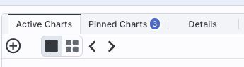
⚠ Tips and Troubleshooting
- When you pin a plot, and then filter its parent catalog, the plot
updates correspondingly, because it is still linked to its parent
catalog.
- When you have multiple catalogs (or tables of any sort) loaded, if
you want to bring to the foreground the catalog tab corresponding to a
pinned plot, click on "show table" , and
it will bring the corresponding catalog to the foreground of your
tables pane.
- If you click on a source in the image (or catalog or plot), the
same source is highlighted in the catalog (or image or plot).
- To change a pinned plot, click on the plot to bring it to the
foreground, then click on the gears in the the corresponding plot
area, and change what is plotted as described above.
- You can view the plots one a time or in a
grid by clicking on the icon for one-at-a-time (big square) or tiled
(4 small squares; if you are viewing them one at a time, you can use
the ">" and "<" arrows to scroll through the list):
- There is a maxium of 12 charts that you can pin at one time.
- When many plots are pinned, and you view many plots at once, the
margins on the plots will shrink down to make the data more visible.
To view the plots with more reasonable margins, view the plots one at
a time.
- To remove a pinned plot, click on the blue 'x' in the upper right
corner of the plot.
- If you remove a catalog by clicking on the 'x' in the
corresponding catalog tab, the pinned plot will be removed as well.
When you have more than one plot
pinned, you have an additional icon that can appear -- it means
"Combine Chart".
This option only appears if you have pinned at least two plots, and it
will only let you combine plots if it recognizes that you have spectra
loaded. These can be spectra you extracted or have loaded in
from a file.
Because combining is only possible for spectra at this time, the
information on how to combine plots can be found in the chapter on spectra.
Here are several examples of plots made with IRSA tools.
Phase-folded light curve from K2 data:
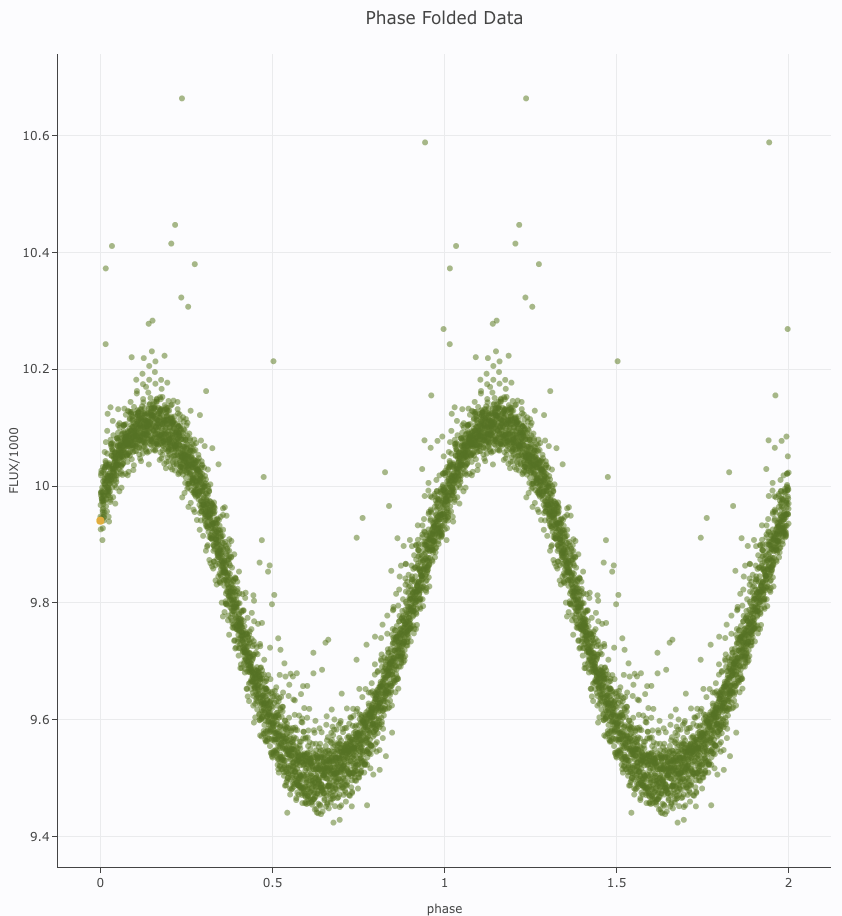
Plot on the sky of stars where the color of the point is scaled to
brightness in WISE-4:
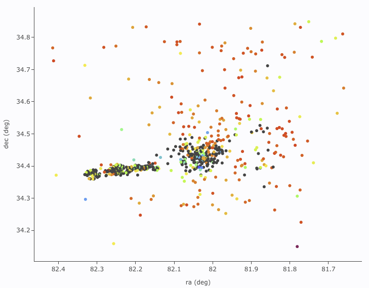
Gaia distance (in kpc, from Bailer-Jones et al. 2018), with asymmetric
errors, as a function of Gaia G magnitude, with colors of the point
scaled to brightness in WISE-4:
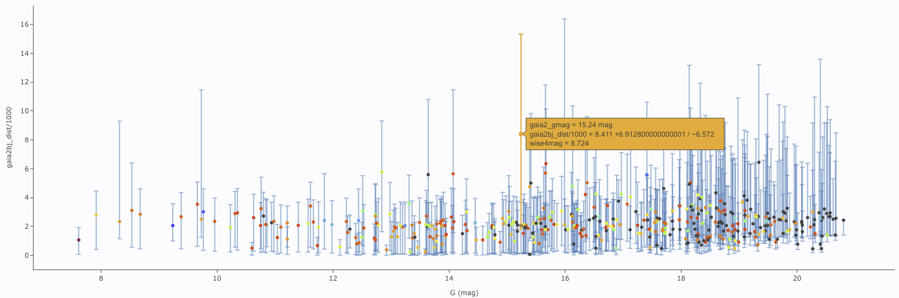
[W1] light curve of Neptune over
several years, with colors of the point scaled to heliocentric
distance:
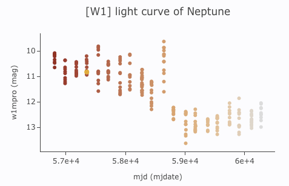
Absolute Gaia color-magnitude diagram of candidate members of a
star-forming region (note some background giants still in the list),
where point size is scaled by WISE-4 brightness:
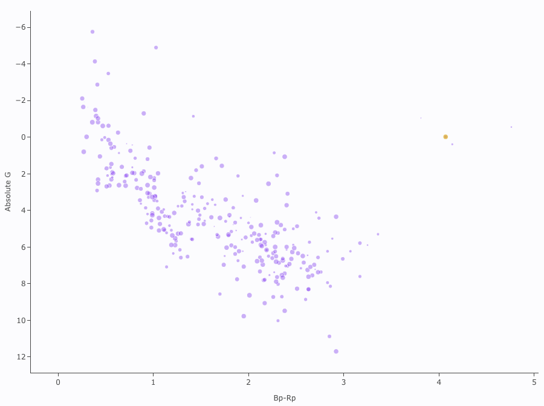